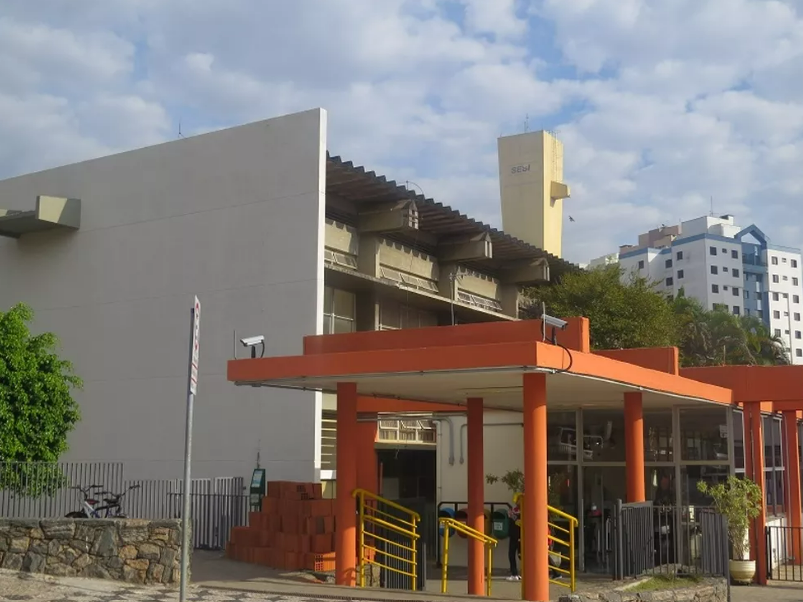

HISTÓRIA DA REDE SESI
Como a educação do trabalhador era fundamental para o avanço do setor industrial, o Sesi no Paraná logo lançou Cursos Populares de Alfabetização de Adultos, visando à recuperação do elemento humano pela instrução, aprimoramento da educação individual e melhoria das relações em sociedade.
Quando os índices de analfabetismo caíram, o Sesi no Paraná se voltou para a formação continuada dos trabalhadores, dando prosseguimento ao ensino fundamental e médio por intermédio dos cursos supletivos, telecursos e da EJA (Educação de Jovens e Adultos). Para que as famílias pudessem frequentar os cursos, foram oferecidas atividades de recreação infantil. A evolução aconteceu através da inauguração de creches e cursos pré-escolares.
Quando foi criado, em junho de 1946, o Departamento Regional do Sesi em São Paulo não possuía sede própria e utilizava dependências instaladas em diferentes prédios: uma parte funcionava na rua Conselheiro Crispiniano, outra na Fiesp, então localizada na Rua 15 de novembro, nº 244, no centro da capital.
